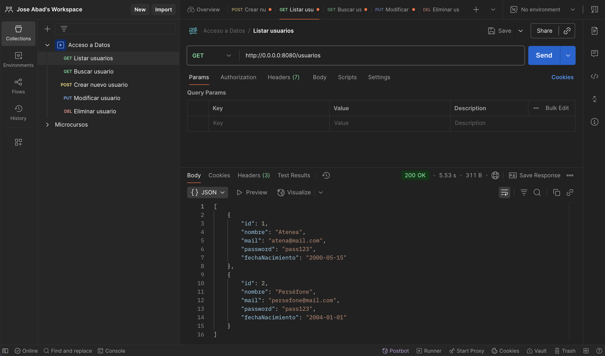
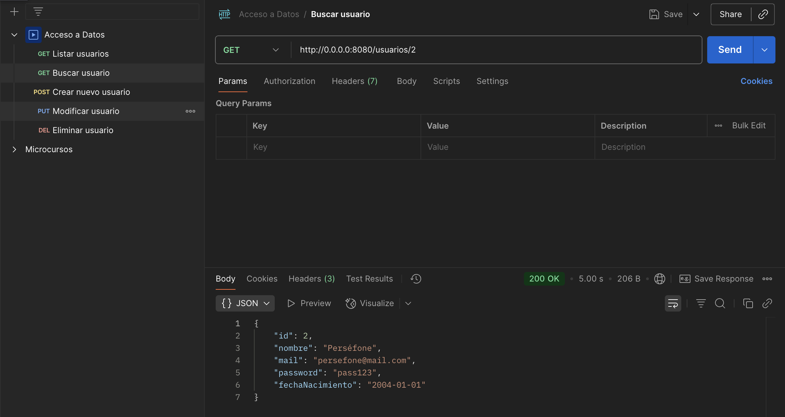
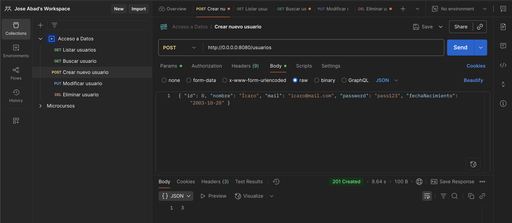
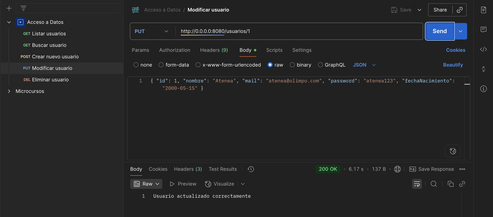
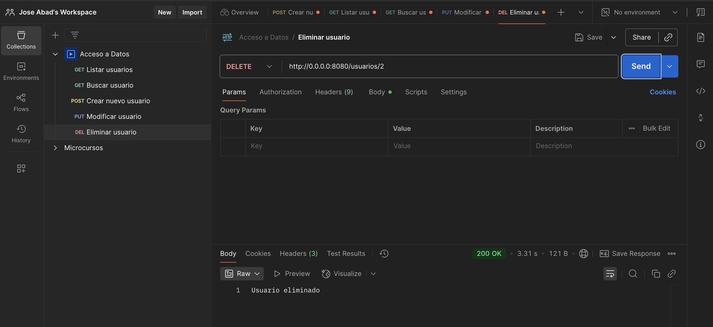

Rutas. Implementación del CRUD Completo
En este apartado vamos a construir las Rutas (Routing) de nuestra API. El objetivo es que nuestro servidor Ktor sea capaz de recibir peticiones HTTP, usar el Servicio para procesarlas y devolver respuestas en formato JSON.
1 Estructura del Routing en Ktor
¿Qué estamos haciendo?
Estamos definiendo los "puntos de entrada" (endpoints) de nuestra aplicación. En Ktor, el sistema de rutas se configura como un "Plugin" que escucha las peticiones que llegan al servidor.
¿Para qué sirve?
Separar las rutas del motor principal del servidor permite que el código sea modular. En lugar de tener un archivo gigante con todas las URLs, creamos pequeñas funciones de extensión que agrupan rutas por "recurso" (ej: usuarios, productos, facturas).
Utilizaremos el archivo plugins/Routing.kt para definir cómo responde nuestra API.
🔍 Ejecutar y Analizar
Abre plugins/Routing.kt y observa la estructura. Vamos a delegar la lógica de los usuarios a una función de extensión para mantener el código limpio.
2 El Controlador de Usuarios: routes/UsuarioRoutes.kt
Implementamos las 5 operaciones fundamentales. El controlador recibe objetos Call (la llamada del cliente), extrae información (parámetros o cuerpo JSON) y delega el trabajo al Servicio.
El controlador actúa como un "traductor":
- Convierte lo que viene de la red (texto JSON) en objetos Kotlin (
call.receive). - Convierte los objetos de nuestra lógica en respuestas para la red (
call.respond).
Aquí es donde ocurre la magia. Definiremos los 5 endpoints clásicos de un CRUD RESTful.
🔍 Ejecutar y Analizar
Crea el archivo UsuarioRoutes.kt en la carpeta routes. Analiza cómo usamos call.respond para enviar datos y call.receive para leerlos.
Estructura de Directorios Resultante
Para implementar este controlador, nuestro proyecto debe estar organizado de la siguiente manera:
3 Semántica de las Respuestas HTTP
Estamos asignando un código numérico a cada respuesta. Una buena API no solo devuelve datos, sino que explica qué ha pasado mediante el estándar HTTP.
Tabla de Códigos de Estado
| Código | Nombre | Significado Teórico | Cuándo usarlo en nuestra API |
|---|---|---|---|
| 200 | OK | Petición exitosa. | En GET (lista o uno) y PUT / DELETE exitosos. |
| 201 | Created | Recurso creado con éxito. | Siempre tras un POST que inserte un registro. |
| 400 | Bad Request | Petición mal formada. | Si el cliente envía un ID que no es un número. |
| 404 | Not Found | No encontrado. | Si buscamos, editamos o borramos un ID inexistente. |
| 409 | Conflict | Conflicto en el servidor. | Si intentan registrar un email que ya existe. |
| 500 | Internal Error | Error no controlado. | Cuando nuestro código falla (excepción no capturada). |
4 Probando la API
Utilizamos herramientas externas para simular ser un cliente (un móvil o una web) que consume nuestra API.
Dado que una API REST no tiene "botones" ni "pantallas", necesitamos enviar peticiones manuales para verificar que el flujo Controlador -> Servicio -> DAO -> BD funciona correctamente de principio a fin.
🔍 Herramientas recomendadas
- Postman: La herramienta estándar de la industria. Accede a su página oficial
- IntelliJ HTTP Client: Muy útil para dejar las pruebas guardadas en el propio proyecto (ficheros
.http).
4.1 Tabla de Endpoints y Pruebas
Antes de comenzar con las pruebas, vamos a acceder a nuestra BD y vamos a insertar (con SQL) usuarios de prueba:
La siguiente tabla muestra las peticiones que vamos a testear en http://0.0.0.0:8080:
| Método | URL (Endpoint) | Parámetros / Body (JSON de ejemplo) | Objetivo |
|---|---|---|---|
| GET | /usuarios |
Ninguno | Obtener la lista de todos los usuarios. |
| GET | /usuarios/1 |
id=1 en la URL |
Ver detalles del usuario con ID 1. |
| POST | /usuarios |
{ "id": 0, "nombre": "Ícaro", "mail": "icaro@mail.com", "password": "pass123", "fechaNacimiento": "2003-10-20" } |
Crear un nuevo usuario. |
| PUT | /usuarios/1 |
{ "id": 1, "nombre": "Atenea", "mail": "atenea@olimpo.com", "password": "atenea123", "fechaNacimiento": "2000-05-15" } |
Modificar los datos del usuario 1. |
| DELETE | /usuarios/2 |
id=1 en la URL |
Eliminar permanentemente al usuario 2. |
Nota sobre el JSON
Recuerda que en el POST y PUT debes configurar en Postman el tipo de cuerpo como raw y seleccionar JSON. Asegúrate de que los nombres de los campos coinciden exactamente con tu UsuarioDTO.
Listar todos los usuarios
La primera petición http://0.0.0.0:8080/usuarios usando el método GET nos devolverá la lista de todos los usuarios de la BD.

Buscar usuario por id
Podemos realizar una búsqueda por id. La petición la haremos por GET a la url http://0.0.0.0:8080/usuarios/2 (para buscar el usuario con id igual a 2).

Crear un nuevo usuario
En esta ocasión, vamos a insertar datos en nuestra BD. Para ello, por seguridad, el envío de parámetros lo realizamos usando el método POST. Los parámetros, en vez de ir concatenados en la URL como en el método GET, irán encapsulados dentro del cuerpo de la petición.
Esto significa, que al servidor le enviaremos un JSON con los campos del nuevo registro a la URL http://0.0.0.0:8080/usuarios
Además, para asegurarnos de que el id se autoincremente, enviaremos por defecto el id=0. Con este truco, Ktor se quedará tranquilo porque el JSON es correcto y la BD ignorará el id.

Nota: fíjate que el servidor nos ha devuelto el
iddel usuario nuevo creado.
Modificar un usario existente
Para este ejemplo, modificaremos el mail y el password del ususario con el id igual a 1. Usaremos una petición PUT a la URL http://0.0.0.0:8080/usuarios/1. En este caso (como con POST) enviaremos todos los datos del registro a modificar con un JSON dentro del cuerpo de la petición.

Eliminar usuario con id
Por último, vamos a realizar el borrado de un usuario según su id. La petición la haremos usando el método DELETE en la url http://0.0.0.0:8080/usuarios/2.

4.2 Corrección de errores
¿Falla el POST/PUT/DELETE?
Si recibes errores al enviar datos, comprueba estos 3 puntos:
- Content-Type: En Postman, asegúrate de que el Body es
raw->JSON. - El ID en el JSON: Tu
UsuarioDTOtiene un campoid. Si en el POST no lo envías, Ktor fallará. Truco: Envía unid: 0, la base de datos lo ignorará y usará el autoincremental. - Formato Fecha: Debe ser exactamente
"YYYY-MM-DD".
| Método | Endpoint | Body (JSON) Ejemplo |
|---|---|---|
| POST | /usuarios |
{ "id": 0, "nombre": "Ícaro", "mail": "icaro@mail.com", "password": "pass123", "fechaNacimiento": "2003-10-20" } |
| PUT | /usuarios/1 |
{ "id": 1, "nombre": "Atenea", "mail": "atenea@olimpo.com", "password": "atenea123", "fechaNacimiento": "2000-05-15" } |
| DELETE | /usuarios/2 |
(Vacío) |
🎯 Práctica 4. Enrutando y realización de pruebas.
🎯 Práctica para Aplicar
- Implementa el archivo
UsuarioRoutes.kty asegúrate de registrarlo enRouting.kt. - Ejecuta el servidor.
- Utiliza la herramienta Postman para realizar todas las pruebas:
- Listar todos los usuarios (GET).
- Buscar un usuario por
id(GET). - Crear un usuario nuevo (POST).
- Modificar datos de un usuario existente (PUT).
- Eliminar un usuario (DELETE).
- Realiza todas las pruebas posibles (mails duplicados, buscar un usuario que no existe, etc.).
- Verifica que tras las modificaciones, el listado GET devuelve la lista con todos los usuarios y las alteraciones de la BD.